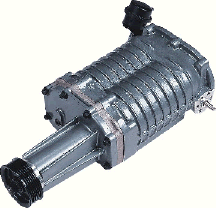
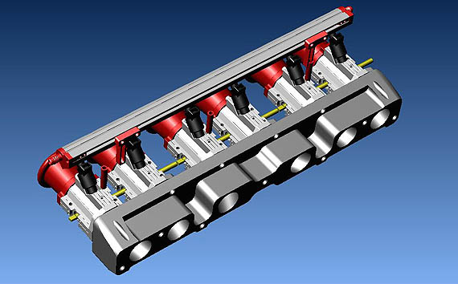
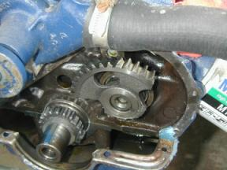

One of the first things you'll notice about the new site, is the addition of many new products, or categories. If the product is not currently available, you are linked to this page. We apologize for this inconvenience, but did so in an effort to inform our customers of all the new and exciting products we will be adding to our site over the coming years. Our goal is to eventually stock every part you might need to complete your inline six project, rather than offering performance products only. As always, we only stock the highest quality products available, hence our customers can rest assured they are purchasing the very best quality available, at a great price. We refused to sacrifice quality for cheaply produced parts, quick knock
offs, and/or imitations, which are so often produce by those wanting to make a fast buck, at your expense. All Classic Inlines products carry the original manufactures identification or part number, or Classic Inlines part number, as well as the manufacturers warranty. All of our parts are professionally engineered and thoroughly tested before being released to the public.
 |
Classic Inlines is actively developing and producing new and exciting performance products for your inline six. Listed below are the current products we are working on, and hope to released in the near future. Unfortunately, much of this depends on the current economy. We are currently working with several manufacturers, designing, manufacturing, and testing several new products. Our eventual goal is to offer
a full range of performance parts, which are commonly found in the V8 world. Therefore, if there's a
part you would like to see produced, but can't find, please feel free to contact us
and share your thoughts.
Please Note: this page is constantly being updated, so stop back often and check for new and updated developments, as they happen. Thank you.

Big Six Aluminum Cylinder Heads (240-300ci)
|
UPDATE 3-1-2011
We we're hopping to release the big six aluminum cylinder heads by the end of the summer, unfortunately the economy has forced us to keep the project on hold. As much as we'd like to move forward, we simply don't have the funds to do so. Hopefully that will change in the near future, we'll just have to wait and see.
While the patterns are done, we still have a lot of work ahead of us. First we need to cast a couple heads, digitize an old cast iron head, then develop the CNC programming, which is needed to machine the heads. This step alone could take weeks, or even months. Once the prototypes are machined and the dimensions verified, the cylinder heads need to be assembled and tested on a flow bench. Flow testing a new cylinder head is very time consuming and expensive. Each and every port needs to be flow tested, ported, and tested again. However making sure this step is done properly, and not rushed, is crucial to the end result. If the flow test are unacceptable, the patterns are modified and the process starts all over again. Cast, edit programming, machine and assemble, and flow test again. This process continues over and over, until we achieve the desired results, regardless how long it takes.
If and when the flow test are acceptable, we can move on to the next step, which is real-world testing. For this step, we'll cast, machine, and assemble a half dozen cylinder heads, which will be tested under actual driving condition, on a variety of motors, ranging from completely stock to all out race applications. While the main goal is to record changes in performance (HP and TQ) and mileage, we'll also look at installation procedures (or problems), specifications (such as spark plug ranges), and over-all reliability. Once we're confident the bugs have been sorted out, we'll give the thumbs up for the first production run.
UPDATE 4-7-2012
While the cylinders are still on the back-burner, there is some hope at the end of the tunnel as it looks like the economy may be picking up. Our sales have been pretty good over the past three months, and if it continues like this for a few more months, we should be in a position to start working on the cylinder heads again. Keep your fingers crossed.....
|
|
Corteco has agreed to produce a their performance .038 composite head gasket for the small sixes. To manufacturer the
gaskets, Corteco uses a special Fuji film which is placed between
the cylinder head and the block.
The film turns different shades of red, based on the clamping force applied, when the head is torque'd down. The information is then entered into a computer, which in turn designs a gasket which is specifically suited to sealing the cylinder head for that particular application. The performance head gasket will be particularly well suited for our new aluminum cylinder heads, as well as
all cast iron heads. They also utilize Corteco's new White Seal Technology for unmatched sealing.
back to page top
|
Magnuson and/or Procharger Blowers Kits
|
Classic Inlines will be working with Magnuson on the development of an intake manifold suited for mounting the M90 SuperCharger to the new aluminum cylinder head. If possible, the design will incorporate an air to water inter-cooler so that boost levels can be increased for optimum performance gains. |
The Magnuson MP90 is a “State of the Art” supercharger engineered for 3.0 to 5.7 liter passenger cars. It was designed as a compact, flexible supercharger for increased power, quietness, and reliability without adversely affecting fuel economy. The M90 has proven itself in a number of original equipment and aftermarket applications. This latest version incorporates “S Port” technology and a built in bypass for unparalleled performance. |
The Magnuson MP90 is a “State of the Art” supercharger engineered for 3.0 to 5.7 liter passenger cars. It was designed as a compact, flexible supercharger for increased power, quietness, and reliability without adversely affecting fuel economy. The M90 has proven itself in a number of original equipment and aftermarket applications. This latest version incorporates “S Port” technology and a built in bypass for unparalleled performance.
|
 Most installations see a realistic 40% plus increase in power output. Most installations see a realistic 40% plus increase in power output.
Magnuson/Eaton Superchargers work effectively in any orientation
(flat, upside down, on edge).
Magnuson 4th generation superchargers have internal bypass valves.
The bypass actuator can be located in any of 12 possible locations
(6 on
each
side of the supercharger).
Shown with generic one-piece drive. Two-piece and different one-piece
drives are available, as are pulleys with variable offset giving a wide range of
possible drive lengths.
|
 |
|
|
We are in the process of developing turbo headers to fit the various applications. Once we have the designs correct, we will have them mass produced and offer kits. The kits will include the turbo header, down pipe, turbo charger, waste gate, blow off valve, optional inter-cooler, and either a carb bonnet or plenum. Once the kit is installed, it just a simple matter of running the plumbing, which can be accomplished by any quality exhaust shop. We hope to release the kits early to mid summer 2007. Sooner if possible.
back to page top
|
|
Classic Inlines is currently working with three different manufacturers. Our goals are to produce a kit for both the log head and our aluminum head, which are affordable and fairly easy to install. We already have two prototype kits installed and running, however both kits are installed on our aluminum heads. A kit for the log head is being installed shortly, and should be up and running late spring. Once the kits are tested on the street and/or track, and on the dyno, we will evaluate the information and proceed from there. Hopefully will have kits, for both the log head and our aluminum head, sometime mid to late summer 2011.

back to page top
|
|
Classic Inlines has spoken with several cam manufacturers about the possibilities of producing a roller camshaft and it looks like one of the major cam manufacturers may produce them exclusively for Classic Inlines. However before they can be produced, we need to mock up a short block and resolve the problem of installing roller lifters. Once this is done, it would only take a few months to produce blanks and grind the cams.
back to page top
|
 |
|
Dual Roller Timing Sets have proved to be one of the most difficult products to get produced. We stock adjustable dual roller timing sets for the 200ci, but have not succeeded in having a set produced for the 250ci. However, we refuse to give up and
will continue our search for as long as it takes to be successful. We are also looking into the possibilities of having an adjustable belt driven timing set produced. |
Ever wonder how we got started?
|

Broken timing chain
|
When we built our very first performance inline six, we destroyed
the stock timing set within a few weeks. I immediately began looking for a manufacturer who could produce a custom set. After searching for nearly a year, I finally found a company that agreed to build them, however I needed to order a minimum of fifty units. Therefore, I ask my fellow FordSix forum members if they would like to join me for a group purchase. When it was all said and done, the order was increased to one hundred sets, with a few spares left over. To sell the remaining units, I created a rudimentary website, with five other products, which resulted in the creation of Ford Six Performance Parts, now Classic Inlines. |
|
|
| We will be producing Fender Badges sometime later this spring, based on the following designs. They will be chrome plated metal, rather than cheap plastic, for durability. Adhesive double back tape is included for mounting. Approximate size: 3" x 1.5" |
|
|
|
Badges will be available in 200, 250, 240 and 300, with your choice of
HIGH PERFORMANCE, TURBOCHARGED, SUPERCHARGED, AND FUEL INJECTED. |
back to page top
|